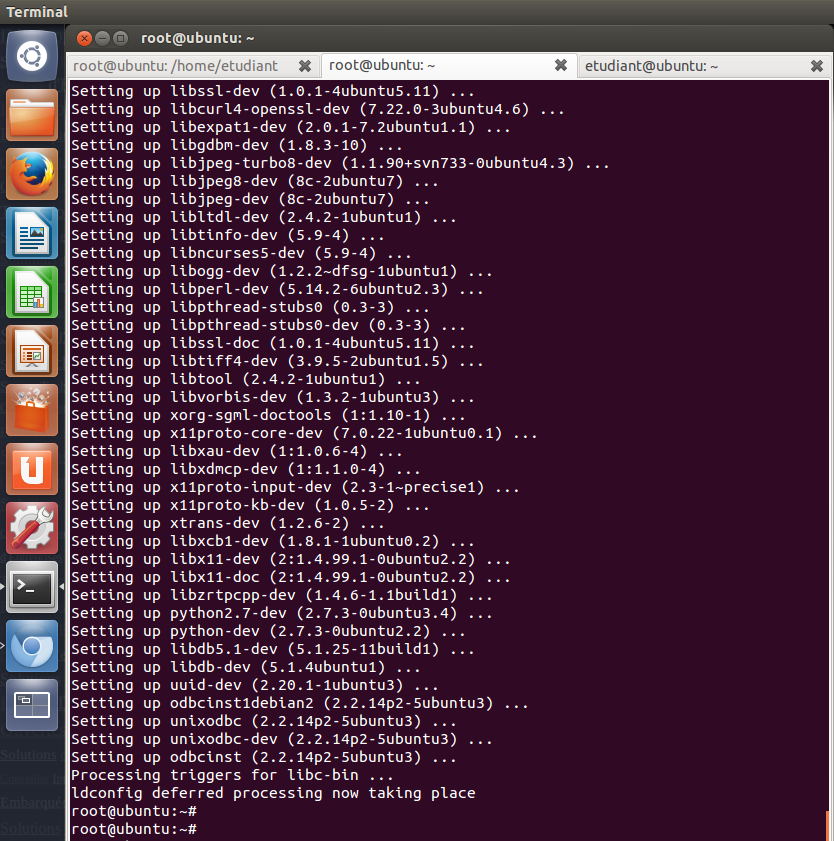

Please see the Ubuntu Quick Start Guide for an official guide to installing Freeswitch.
Otherwise, to install the latest FreeSwitch from git, run the following commands:
# Install all dependencies
sudo su -
apt-get install git-core build-essential autoconf automake libtool libncurses5 libncurses5-dev make libjpeg-dev pkg-config unixodbc unixodbc-dev zlib1g-dev libcurl4-openssl-dev libexpat1-dev libssl-dev libtiff4-dev libx11-dev unixodbc-dev python2.7-dev zlib1g-dev libzrtpcpp-dev libasound2-dev libogg-dev libvorbis-dev libperl-dev libgdbm-dev libdb-dev python-dev uuid-dev bison autoconf g++ libncurses-dev
# Download FreeSwitch
mkdir -p /usr/local/src
cd /usr/local/src
git clone git://git.freeswitch.org/freeswitch.git
cd freeswitch
# Build
./bootstrap.sh
./configure
make
# You may have to call "make" a few times before it works.
# Install in /usr/local
make all install cd-sounds-install cd-moh-install
Reference: http://wiki.freeswitch.org/wiki/Linux_Quick_Install_Guide to install FreeSwitch (install all optional packages).
Now, it is time to see if freeswitch is properly loaded. If you already have sflphone on the same computer, make sure to close it first.
/usr/local/freeswitch/bin/freeswitch
After a few seconds, a shell will appear. To test if SIP is ready, enter:
sofia status profile internal
This should display something like:
Name internal
Domain Name N/A
Auto-NAT false
DBName sofia_reg_internal
Pres Hosts 192.168.48.185,192.168.48.185
Dialplan XML
Context public
Challenge Realm auto_from
RTP-IP 192.168.48.185
SIP-IP 192.168.48.185
URL sip:mod_sofia@192.168.48.185:5060
BIND-URL sip:mod_sofia@192.168.48.185:5060;transport=udp,tcp
HOLD-MUSIC local_stream://moh
OUTBOUND-PROXY N/A
CODECS IN G722,PCMU,PCMA,GSM
CODECS OUT G722,PCMU,PCMA,GSM
TEL-EVENT 101
DTMF-MODE rfc2833
CNG 13
SESSION-TO 0
MAX-DIALOG 0
NOMEDIA false
LATE-NEG true
PROXY-MEDIA false
ZRTP-PASSTHRU true
AGGRESSIVENAT false
CALLS-IN 0
FAILED-CALLS-IN 0
CALLS-OUT 0
FAILED-CALLS-OUT 0
REGISTRATIONS 1
{kind=link}